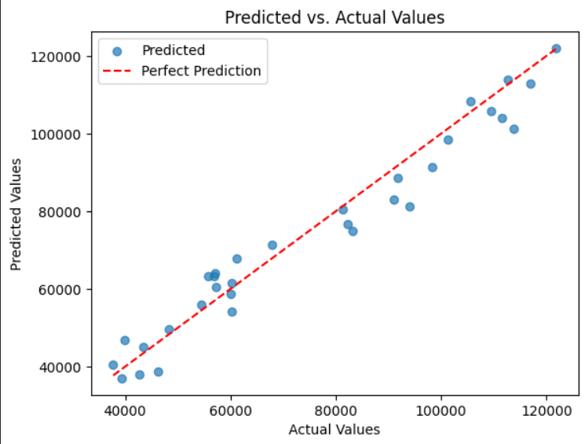
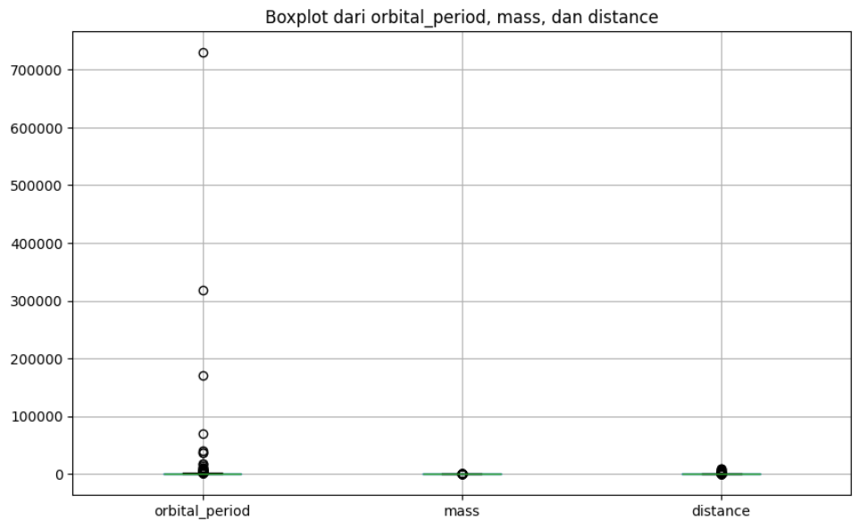
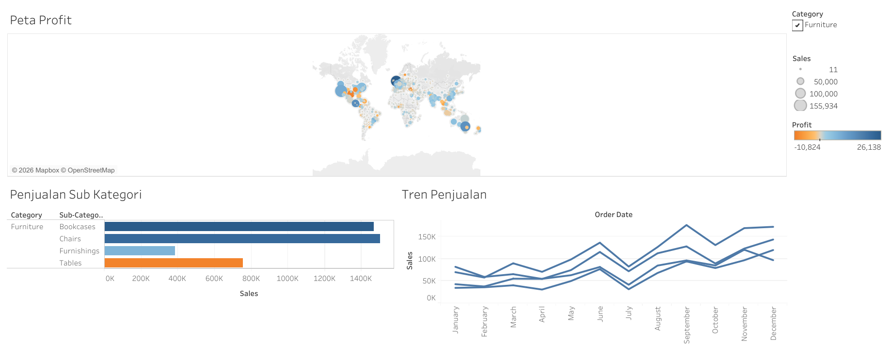
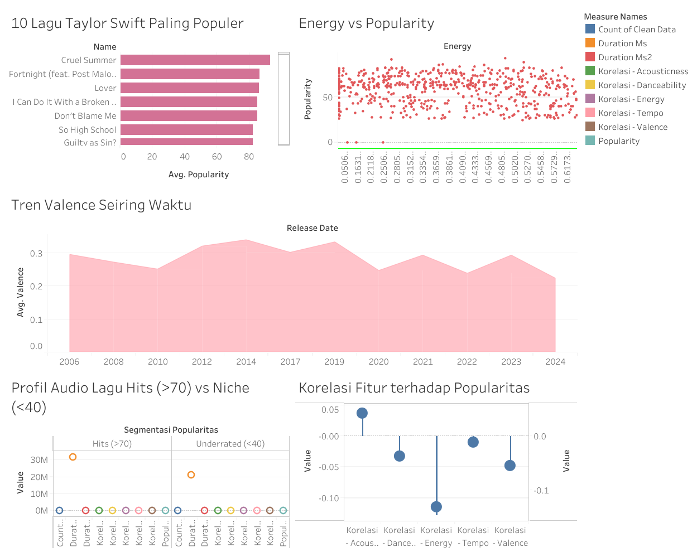

MY SKILLS
| Skill | Proficiency Level |
|---|---|
| Python & Machine Learning | Intermediate |
| SQL & Database Management | Intermediate |
| Microsoft Excel (Data Processing) | Intermediate |
| Statistics & Exploratory Data Analysis (EDA) | Intermediate |
| Data Visualization | Intermediate |
| Analytical & Critical Thinking | Intermediate |
| Presentation & Communication Skills | Intermediate |
LATEST PROJECTS
Project Manager
16 ProjectsLMS PM 2 Term of Reference (TOR)
Covered project background, objectives, module scope, PIECES framework analysis, benefits, expected deliverables, 4-week timeline, and cost simulation.
View Project ➔LMS PM 2 Business Case
Outlines problem background, business and strategic objectives, success criteria, assumptions, constraints, initial requirements, Rp3,500,000 simulation budget, 4-week timeline, and risk mitigation for Role, Submission, Grading, Quiz, and Report modules.
View Project ➔LMS PM 2 Project Charter
Established project objectives, scope for Role, Submission, Grading, Quiz, and Report modules, deliverables, risks, milestones, and authorization.
View Project ➔LMS PM 2 Project Scope Statement
Defined project rationale, product characteristics, access control rules, data consistency requirements, and documentation standards for the five PM 2 modules.
View Project ➔LMS PM 2 Statement of Work (SOW)
Specified work objectives, five-module scope, 12 expected deliverables, execution phases, 4-week schedule, cost estimate, acceptance criteria, and risk mitigation.
View Project ➔LMS PM 2 Work Contract (Kontrak Kerja)
Establishes agreement terms, five-module scope, eight required deliverables, 4-week schedule, Rp3,500,000 simulation value (40%/60% staged payment), acceptance, confidentiality, and change rules.
View Project ➔LMS PM 2 Technical Proposal
Outlined technical approach, module dependencies (Task-to-Submission-to-Grading-to-Report), execution schedule, team composition, and budget simulation.
View Project ➔LMS PM 2 Work Breakdown Structure (WBS)
Breaks down the PM 2 sub-project into 4 work packages, 15 sub-packages, and 43 activities across 4 weeks, mapped to module scope, 12 deliverables, milestones, budget, and risks.
View Project ➔LMS PM 2 Time Scheduling Plan
Defined schedule control policy, 43 WBS activities, activity dependencies, resource allocations, workday durations, Gantt chart, and M-1 to M-4 milestones.
View Project ➔LMS PM 2 Budget Plan (RAB)
Structured bottom-up cost estimates, Rp2,900,000 cost baseline, Rp600,000 risk reserve (Rp3,500,000 simulation ceiling), phase allocation, and PV/AC/CV tracking.
View Project ➔LMS PM 2 Human Resources Management
Defines organizational structure, team assignments, job descriptions, resource allocation across WBS phases (Oct 5 - Nov 1, 2026), RACI matrix, and coordination controls.
View Project ➔LMS PM 2 Plan Quality Management
Defines conformance to requirements and fitness for use, quality planning across the five modules, quality metrics, QA procedures, and quality assurance roles.
View Project ➔LMS PM 2 Plan Procurement Management
Covers procurement scope, Make or Buy analysis, conditional contract types, supplier evaluation criteria, support requirements list, 4-week schedule, and procurement risk mitigation.
View Project ➔LMS PM 2 Risk Management Plan
Identified 10 sub-project risks across scope, module dependencies, deliverables, schedule, and budget simulation, paired with qualitative ratings and mitigation actions.
View Project ➔LMS PM 2 Communication Strategy
Mapped meeting cadences, progress/integration/change/issue/final reporting, communication channels, and stakeholder information matrix.
View Project ➔LMS PM 2 Project Management Plan
Detailed WBS, change control, schedule, cost baseline, quality management, RACI, communication, risk log, issue log, procurement, and compliance plans.
View Project ➔Data Analytics & Machine Learning
4 Projects
Crab Age Prediction
A Python-based Exploratory Data Analysis (EDA) to visualize crab physical characteristics and detect anomalies.
View Project ➔
Salary Prediction
An end-to-end ML project predicting employee salaries utilizing Linear Regression models.
View Project ➔
Exoplanet EDA
Data preparation and exploratory data analysis of Exoplanet datasets for anomaly detection.
View Project ➔
Bike Sales Analytics
Consolidated, cleaned, and analyzed over 113,000 rows of bike sales transaction data across multiple lab modules.
View Project ➔Business Intelligence & Storytelling
2 Projects
Global Superstore
An interactive BI dashboard visualizing sales trends, profitability, and regional performance.
View Project ➔
Spotify: Taylor Swift
A creative Data Storytelling project visualizing streaming trends and musical characteristics.
Database & Information Systems
9 ProjectsGojek Database & Infrastructure Design
Designed a cloud and relational database schema for Gojek across six core tables with cardinalities
View Project ➔Advanced Programming & Relational DB Book
Co-authored a textbook covering algorithms, loops, and branching in C, C++, and Python alongside SQL and relational algebra.
View Project ➔Course Registration System UML Design
Modeled a student course registration system using UML diagrams, database schema mappings, and object-oriented test cases.
View Project ➔PT Leschaco Logistic Business Process Analysis
Mapped core logistics processes, event logs, As-Is BPMN flows, and ERP-WMS integration for PT Leschaco Logistic Indonesia.
View Project ➔Bank Mandiri Taspen Process & Lean Six Sigma Analysis
Evaluated pension credit workflows using BPMN, Cycle Time Efficiency, queuing, Pareto, and PICK analysis to address approval bottlenecks.
View Project ➔PHI-Minimart SQL & Data Analysis
Executed 30 SQL queries across eight OLTP tables covering filtering, aggregations, multi-table joins, top products, and branch revenue.
View Project ➔Integrated Polyclinic Queue UML Redesign
Redesigned an end-to-end polyclinic queue system with activity, use case, class, and sequence diagrams connecting patients, admin, doctors, and pharmacists.
View Project ➔Store Relational Database & SQL Exercises
Modeled a six-table retail schema and completed 30 SQL exercises using aggregations, filtering, sorting, and INNER, LEFT, RIGHT, and NATURAL joins.
View Project ➔Retail Store Relational Schema & 30 SQL Queries
Executed 30 basic, aggregate, and multi-table JOIN queries across a six-table store schema with verified query outputs.
View Project ➔AI Governance, Ethics & Career Editorial
8 ProjectsCareer Compass Expo 2025 Coverage
Covered UIN Jakarta's Career Compass Expo featuring a job fair, CV and interview workshops, and Localpreneur Fest.
View Project ➔PintarKarier RAG Career Portal Essay
Proposed a context-bound Retrieval-Augmented Generation employment architecture mapped to SKKNI competencies, UU PDP, and AI ethics guidelines.
View Project ➔Content Creator as a Gen Z Career Path
Examined how tech students and fresh graduates use open digital portfolios and content creation to navigate competitive formal job markets.
View Project ➔Corporate Social Responsibility in IT
Analyzed IT corporate social responsibility across Green Computing, e-waste management, data ethics, and Tech for Good initiatives.
View Project ➔Turning Campus Confusion into Career Steps
Reflected on overcoming early career uncertainty through career expos, networking, workshops, and hands-on skill building.
View Project ➔Ethical RAG Public Employment Service Proposal
Formulated a national innovation proposal for Gen Z skill-gap diagnostics, privacy-by-design data governance, and multi-agency implementation.
View Project ➔IT Social Responsibility & Tokopedia Case Study
Presented IT CSR legal frameworks, Green Computing strategies, and a data-breach ethics analysis based on the 2020 Tokopedia case.
View Project ➔More in Progress
Currently brainstorming and dissecting exciting new datasets for upcoming data science work.
Stay Tuned